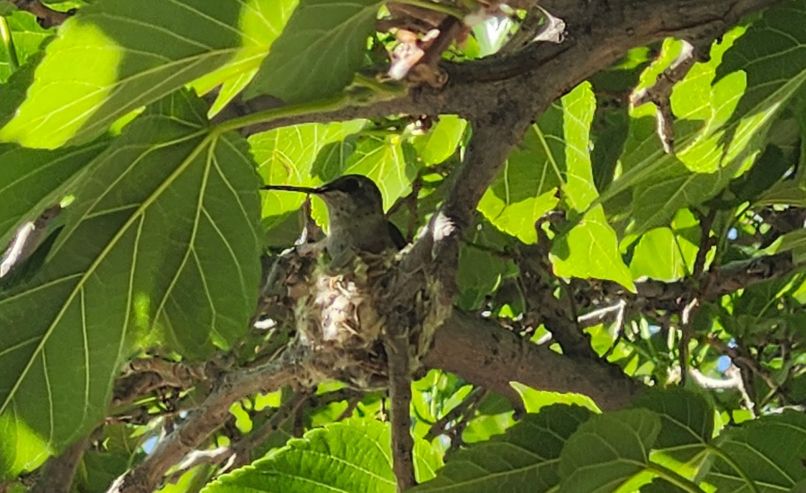
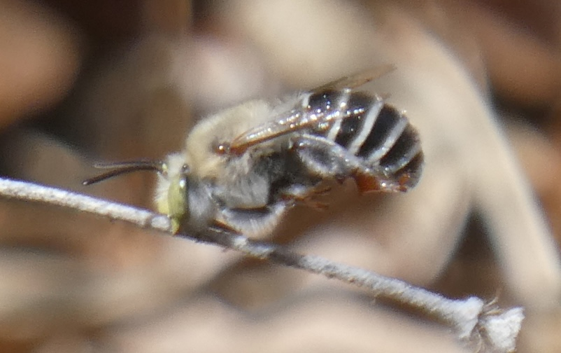

Northern Flicker, a resident bird, in a Backyard Refuge

Nesting Hummingbird in a Backyard Refuge

Digger Bee, a native pollinator, in a Backyard Refuge
About the Habitat Map
This map appears as three concentric circles that represent habitat from backyard
refuge's.
Birds Layer
Migratory and resident birds will venture an average of 800 meters from their home base
to look for additional resources. When two or more backyard refuges are within 800
meters of each other, this creates connected habitat for birds.
Nesting Birds Layer
Nesting birds will venture an average of up to 60 meters from their home base. When two
or more backyard refuges are within 60 meters of each other, this creates opportunities
for connected habitat for nesting birds to help them find the resources they need for
raising the next generation.
Bees Layer
Bees will venture an average of 150 meters from their homebase. When two or more
backyard refuges are within 150 meters of each other, this provides connected
habitat for bees to help them find food and nesting opportunities.
About the Neighborhood Density Map
This map shows the density of Backyard Refuges per neighborhood association or zipcode in the
greater
Albuquerque area. The data has been normalized by the number of households in each area, this
makes the
neighborhood associations and the zipcodes more visually comparable. The shading is based on the
ratio
of Backyard Refuges to the total number of households in the neighborhood association. Click on
each
area on the map to read the number of refuges in the area as well as and the ratio of Backyard
Refuges
to the total number of households.normalized value.
Data Sources
The maps were created with data from the New Mexico Backyard Refuge Program, the U.S. Census
Bureau, and with basemaps from USGS and ESRI.
Maps were made by Katie Slack from the GeoAIR Lab with consulatation from Laurel Ladwig, Dr.
Liping Yang, and Rae Bennu. The maps were made for the New Mexico Backyard Refuge Program and
the R.H. Mallory Center for Community Geography.